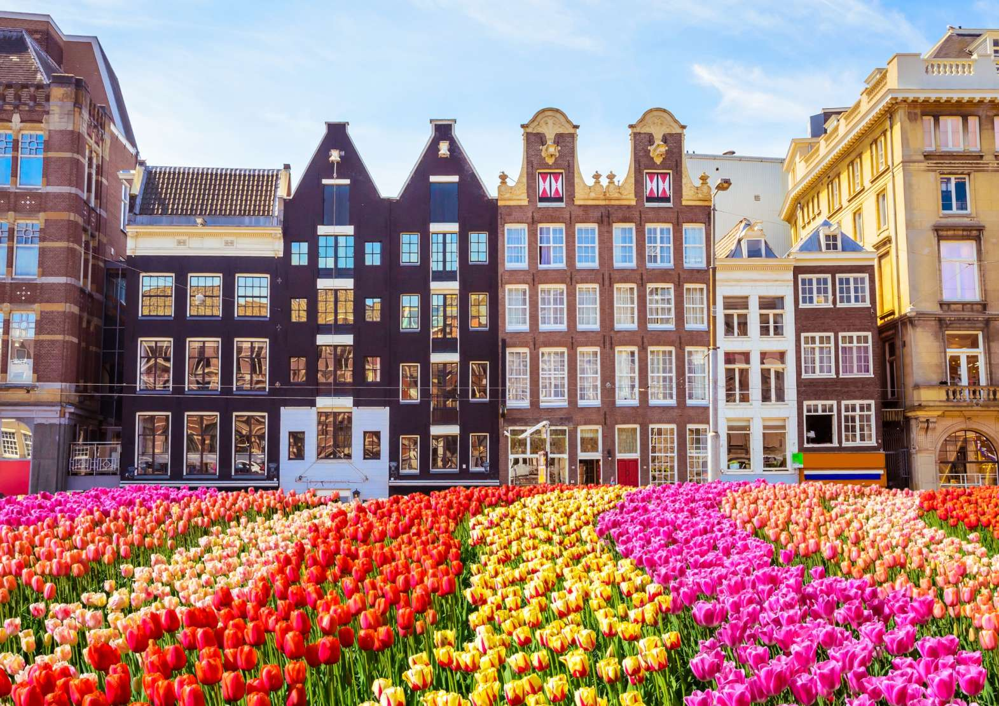
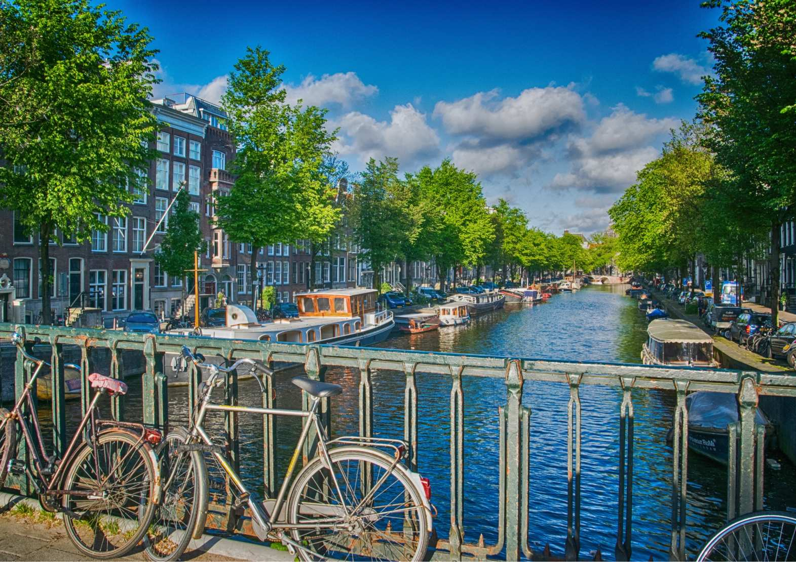
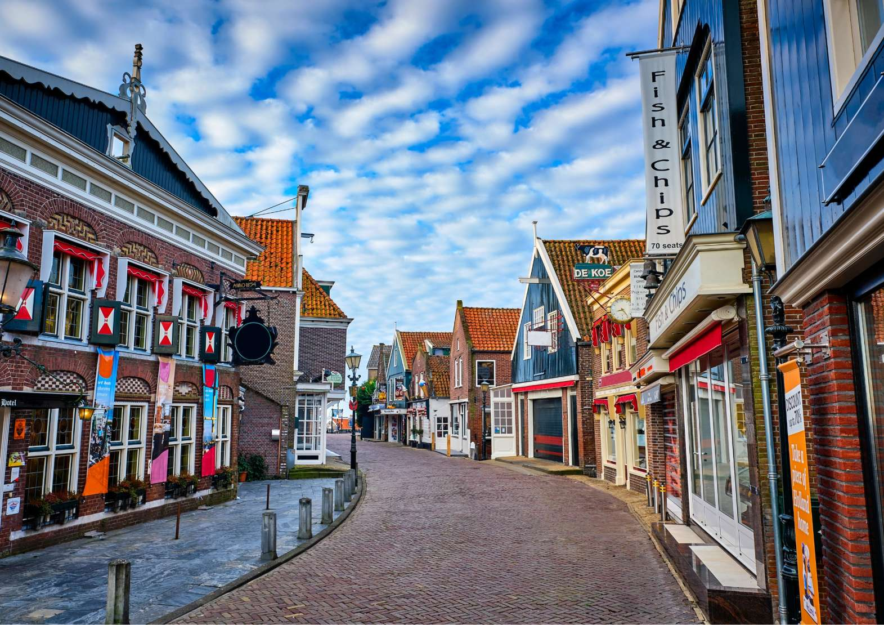

Original Photos

Volendam (Creative Commons CCO - Public Domain)

Groningen (Creative Commons CCO - Public Domain)

Amsterdam (Creative Commons CCO - Public Domain)
Black & White Filter
Volendam (Greyscale)
Groningen (Greyscale)
Amsterdam (Greyscale)
Invert Filter
Volendam (Invert)
Groningen (Invert)
Amsterdam (Invert)
Sepia Filter
Volendam (Sepia)
Groningen (Sepia)
Amsterdam (Sepia)